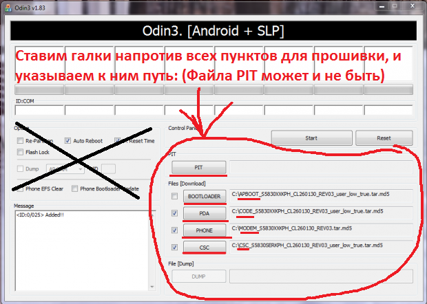
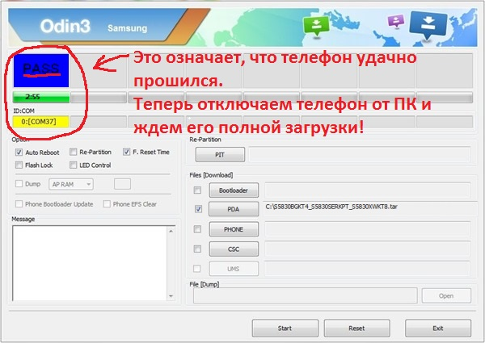

Многофайловая прошивка- это прошивка, состоящая из множества файлов с расширениями tar.md5 (Возможно расширение tar).
При прошивке возможна потеря программ и их данных!
1) После скачивания прошивки и установки драйверов на ПК, мы приступаем к самому процессу прошивки!
2) Переводим смартфон в режим прошивки (bootloader). Посмотреть как перевести смартфон в данный режим Вы можете ниже:
Для старых смартфонов это выглядит так (до средины 2011г.):
Выключаем смартфон/планшет и зажимаем кнопки Громкость вниз + кнопка Вкл/Выкл
Для новых смартфонов это выглядит так:
Выключаем смартфон/планшет и зажимаем кнопки Громкость Вниз + Центральная кнопка + кнопка Вкл/Выкл. Попадаем в меню, отпускаем кнопки и нажимаем кнопку Громкость Вверх.
3) Подсоедините ваш смартфон Android к ПК и дождитесь пока установятся драйвера.
4) Запустите Odin, в левом верхнем углу должно появится окошко что устройство подключено (см. скриншот). Если данного сообщения не появляется- переустановите драйвера!
5) Добавляем файлы прошивки в программу Odin
Т.к наша прошивка многофайловая, то в программе выбираем:
Файл PIT (если есть) в поле PIT (нажать на кнопку PIT)
Файл APBOOT_xxxxx.tar.md5 в поле Bootloader (нажать на кнопку Bootloader)
Файл CODE_xxxxx.tar.md5 в поле PDA (нажать на кнопку PDA)
Файл MODEM_xxxxx.tar.md5 в поле PHONE (нажать на кнопку Phone)
Файл CSC_xxxxx.tar.md5 в поле CSC (нажать на кнопку CSC)

Советую в левом верхнем меню Option ничего не менять, т.к это может повлечь за собой сбои при прошивке. Программа автоматически выставит нужные галки.
6) После того как выбрали файлы для прошивки, нажмите кнопку START и после чего начнется прошивка Android которая будет длится от 2-х до 5-и минут. После чего появится сообщение PASS, прошивка установлена и смартфон перезагрузится.

На этом прошивка закончена.
Если после прошивки Samsung у вас происходит вечная загрузка, то необходимо выполнить сброс данных или так называемый WIPE.